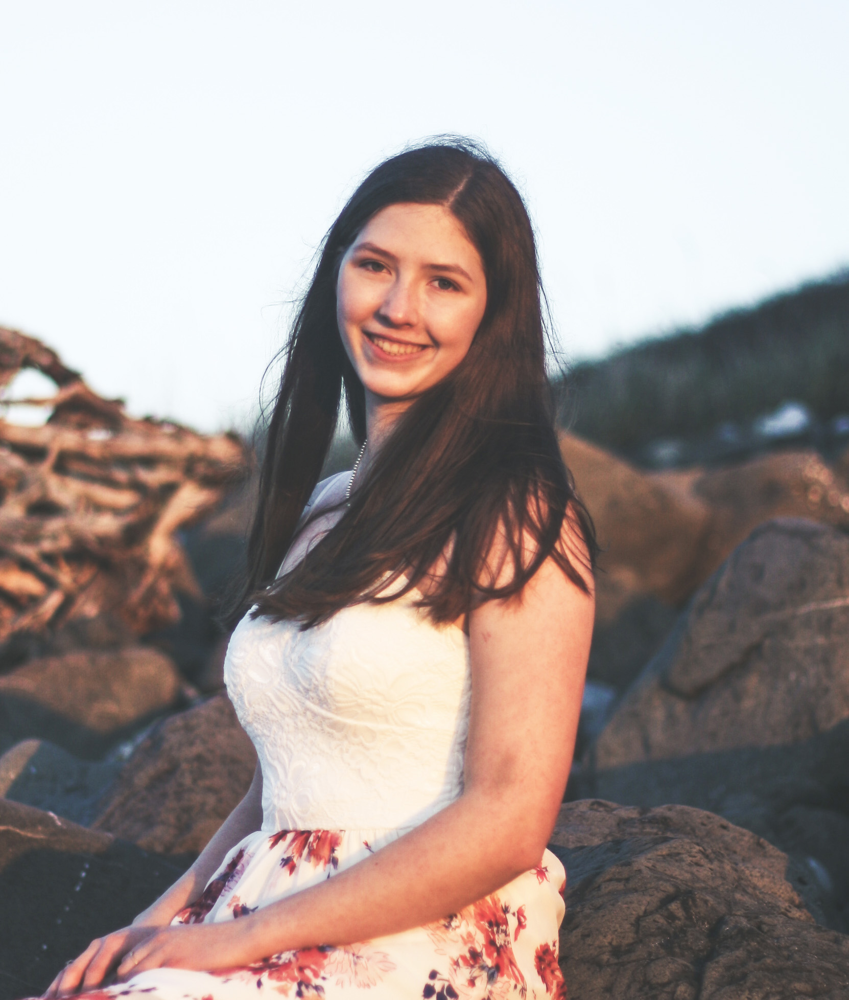

ABOUT/CONTACT
Contact:
Interested in contacting me?
Brief Summary/Overview:
V1 Assignment:
- On my splash page, I've included some general information about my site, a photograph, and a footer.
- On my portfolio page, I've created a place holder for images I will insert once we go over image sizing parameters.
- On my bio page, I've created a place holder for images and short blogs. I will insert images once we go over image sizing parameters.
- On my about page, I've inculded a short bio, and contact information.
V2 Assignment:
- I've started working on my site layout working off my wireframe.
- I worked on my Nav and created a dropdown button for my portfolio catigories. Note: My nav still needs a bunch of work and I'm still figuring out how to size and move the portfolio button.
- I added a little bit of content in my blog page and started formating the blog off my wireframe.
- I've added more content and started formating my contact/about page.
- I formted my home page and moved elements around to match my wireframe.
- My home image has a usemap that will take you to my blog.
- I sized my images.
- I deleted my Portfolio Page and created a Portrait, Macro, and Nature/Landscapes page.
- Things that are repeated among all pages:
- A footer with fixed positioning.
- A gradient applied to the html element
V3 Assignment:
- Place holder for V3.
V4 Assignment:
- Place holder for V4.
About Me:
Born and raised in a small town, with two brothers and a sister I quickly developed a love of adventure, and spending time with my family. My family first became aware of my love for photography, when I recieved a camera for Christmas around the age of 10. I was constantly terroizing my family by taking photographs and videos of them. Since then, my love of photography has only grown. On the rare ocassion that I'm not taking photographs, spending time with my friends and family, or working, you'll find in the shop working with wood, drawing, writing, or watching my current favorite tv show.
